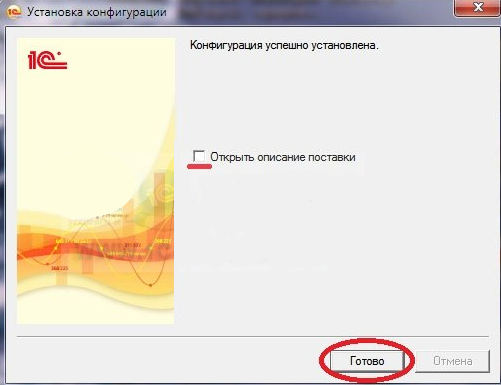

Для того чтобы установить конфигурацию нужен ее дистрибутив (установочные файлы). Скачать необходимые файлы Вы можете с диска ИТС. После того как Вы скачали архив с конфигурацией его необходимо распаковать. Откройте ту папку куда Вы распаковали архив. Она должна иметь примерно такой вид как на рисунке показанном ниже. Запускаем файл установки конфигурации (setup.exe).
В появившемся окне Вам необходимо указать ту папку куда установщик распакует все необходимые файлы для установки конфигурации (шаблона).
Установщик проинформирует нас об успешном завершении установки файлов в указанную директорию. Если Вы не хотите читать файл поставки тогда снимите галочку с этого пункта.
